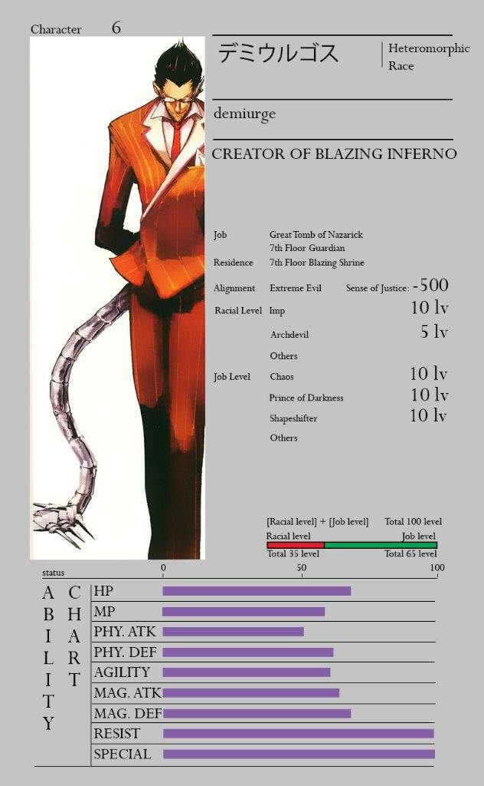

Abilities and Powers

-Demiurge is a “Jack of all trades” NPC. Though he is no match to true specialist, like Cocytus and Mare,
Demiurge’s wide range of skills and abilities allow him to engage enemies in multiple different ways.
Although his physical abilities are just average compared to warriors-type Floor Guardians like Cocytus and Albedo,
he is still far superior to most New World denizens. During the fight with Momon under the guise of Jaldabaoth,
he was able to easily keep up with Momon's incredible speed, while Evileye was not able to instinctively follow his or Momon's speed in the slightest.
Similarly, Demiurge's magical prowess is insignificant in comparison to true magic casters like Mare and Ainz.
He can only cast a very small number of spells within his arsenal. Moreover, he has a maximum of only two 10th tier spells available to him. Nonetheless,
Demiurge’s true power lies in his wide range of special abilities which almost totally compensate his lack of spells. His fighting style can be best described as
“Trickster” who heavily relies on the combination of special abilities and deception to overcome his opponents.
Perhaps, Demiurge's most fearsome trait is his fiendish intellect. Albedo and Pandora's Actor are the only ones in Nazarick who can intellectually keep up with him.
Spells
- Eat Untidy (Web Novel Only)
- Flames of Gehenna: A spell which creates an illusion, spitting tongues of crimson flame towards the sky. The wall of illusionary flames sway like a veil and encircles an area like a girdle.
Ainz states that it has effects that allow demons standing inside the fire benefit from improved attributes. This includes the demons' negative-karma spells doing more damage, item drop rates increasing, and many other effects.
- Flash: A likely low tier spell that causes the caster's body to emit a bright, searing light.
- Greater Teleportation: A 7th tier spell that allows the user to travel greater distances.
- Hell Flame: A 7th tier spell that shoots out a very small flame that will then latch onto a target and become a raging inferno that burns anything to ashes with black flames.
- Hellfire Wall: A 7th tier spell that creates a wall of black flames surrounding everything within the victim's range of view, leaving them trapped. It causes no physical damage but seems to incinerate the soul instead.
- Meteor Fall: A 10th tier spell that causes a meteor to fall from the sky with shimmering light, which blinds onlookers temporarily.
The meteor rips through the air and hits its intended target, then creates a burst of explosion upon contact.
As a result, the massive explosion created by the meteor is able to flatten everything it touches and pulverizes any surrounding targets.
- Sodom's Fire and Brimstone (Mass for the Dead Only): An AoE Fire-type magical attack that deals damage to multiple foes.
Skills
- Aspect of the Devil - Hellfire Mantle: A skill that causes a roaring flame to blaze up from the ground, and a massive shockwave to erupt from Demiurge.
- Aspect of the Devil - Archdemon’s Wrist: A skill that causes a devil’s wrist to be expanded multiple times. It can then be used as a weapon.
- Aspect of the Devil - Razor Sharp Claw: A skill that causes the devil’s claws to become elongated, stretching beyond eighty centimeters. Evileye describes them as claws capable of cutting through the entire world.
- Aspect of the Devil - Tentacle Wings: A skill that causes abnormally long wings to sprout from Demiurge's back with feathers sprouting from them. Evoking the appearance of tentacles, he can then launch them as
strong arrows capable of easily piercing steel.
- Aspect of the Devil - Stout Demon's Gigantic Arms: The demon’s arm swelled up to several times its original size, and it was so long that it dragged upon the ground. This was not pneumatic inflation,
but a sturdy arm of muscle and bone that was a weapon in its own right.
- Aspect of the Devil - Eight-limb of Speed: A skill that causes the devil to sprout spider-like appendages, this is used to increase the user's speed.
- Aspect of the Devil - Demonic Essence: A skill that temporarily gives Demiurge increased muscle mass, allowing him to get a boost in physical strength. (Web Novel Only)
- Command Mantra: Demiurge's words are empowered by this passive skill. It can instantly turn weak-minded individuals into puppets dancing on Demiurge's strings. Additionally, it allows him to give out orders to any being under
level 40. It is said that it's an extremely effective skill for abducting lower status entities.
- Dimensional Lock: Unlike Suzuki Satoru, Demiurge's version of Dimensional Lock is treated as a skill that can only be used by the highest-ranking devils or angels. The spell renders teleportation and transfer magic unusable.
- Evil Lord Summons: It can only be used to summon Evil Lords like Wrath once every 50 hours, but it can be freely controlled for a time. The Great Tomb of Nazarick will not be diminished even if the summoned monster is killed.
- Frost of Judecca: Freezes an enemy. Time-based skill.
|